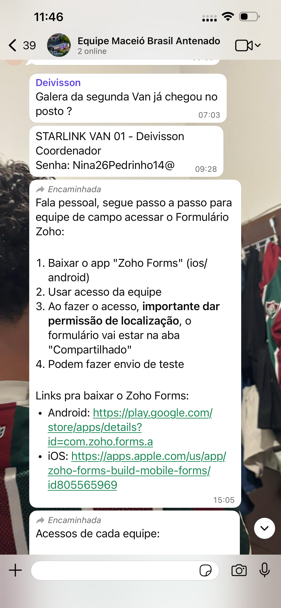

Relatório Operacional
Programa
Brasil Antenado
Expansão de conectividade e acesso à informação por meio da instalação de antenas digitais em famílias em situação de vulnerabilidade.


Expansão de conectividade e acesso à informação por meio da instalação de antenas digitais em famílias em situação de vulnerabilidade.
Dados coletados durante a operação de mobilização até o momento.
Evolução das atividades desde o fechamento do projeto até a execução em campo.
.png)


A operação foi estruturada para garantir volume no Dia D e continuidade de impacto nas semanas seguintes.
Mobilização prévia e pré-cadastro da população para garantir fluxo no Dia D.
Execução central dos atendimentos com estrutura de atração e conversão em massa.
30 dias de acompanhamento pós-carreta por pontos focais locais.
Lideranças regionais responsáveis por manter o relacionamento com a população após a passagem da carreta, garantindo a continuidade e o fechamento dos atendimentos.
Dados coletados via formulário Zoho
Observações da equipe durante a mobilização
Após o primeiro dia de operação, foi estruturado um dashboard de acompanhamento com base nas respostas coletadas pela equipe de campo. Permitiu monitoramento de produtividade por equipe, análise comparativa entre coordenadores e visualização geográfica das interações via mapa de calor.
Estrutura completa para viabilizar a execução das atividades de campo.


Para garantir conectividade contínua durante toda a operação, foi contratada estrutura de internet via Starlink. Essa solução permitiu comunicação constante da equipe, envio de dados em tempo real e continuidade operacional mesmo em deslocamento. Destaca-se que, no dia 21 de março, a equipe enfrentou um deslocamento superior a 12 horas, reforçando a importância crítica da conectividade durante toda a viagem.

As atividades realizadas no período demonstram execução consistente
do planejamento inicial, com mobilização ativa da população,
estruturação operacional completa e coleta sistemática de
evidências.
A continuidade da operação, especialmente por meio dos
pontos focais, garante o
avanço dos atendimentos iniciados e potencializa o volume de
conversões nos dias subsequentes à carreta.
A consolidação das evidências apresentadas neste relatório contribui
diretamente para a
validação das entregas realizadas
e suporte às etapas financeiras do projeto.